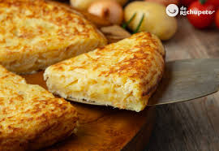
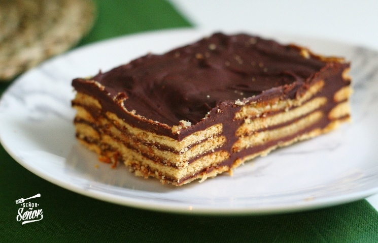
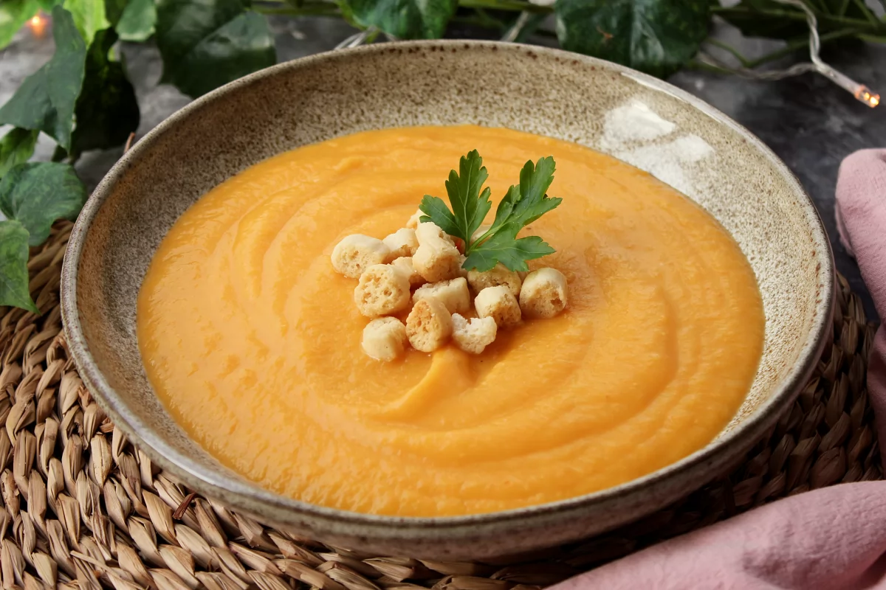

Tortilla de Patata  Fuente: tortilla Ingredientes 5 huevos (250 gr.) 5 rodajas de cebolla 5 Patatas Pasos Pelar y cortar patatas en rodajas. Pochamos cebolla. Freímos patatas, escurrimos. Batimos huevos y mezclamos. Cocinamos la tortilla y damos la vuelta.
Tiramisú Fuente: tiramisú Ingredientes 120 gramos de azúcar 4 huevos Bizcochos sin gluten Café Queso mascarpone Cacao Licor Pasos Montar yemas y claras por separado. Unir con el mascarpone. Montar capas de crema y bizcocho. Refrigerar antes de servir.
Tarta de Galletas y Chocolate  Fuente: tarta Ingredientes Leche para chocolate Chocolate Galletas sin gluten Canela Mantequilla Pasos Infusionar leche con canela y limón. Hacer crema de chocolate. Mojar galletas y alternar con crema.
Puré de Verduras  Fuente: puré Ingredientes Calabaza, zanahoria, puerro, patata AOVE Agua Quesitos opcionales Pasos Rehogar verduras. Añadir agua, cocer y triturar.
Pizza Sin Gluten Fuente: pizza Ingredientes Harina sin gluten Agua Aceite de oliva Levadura Sal Pasos Preparar masa con agua y levadura. Añadir harina y amasar. Reposar, estirar, hornear.